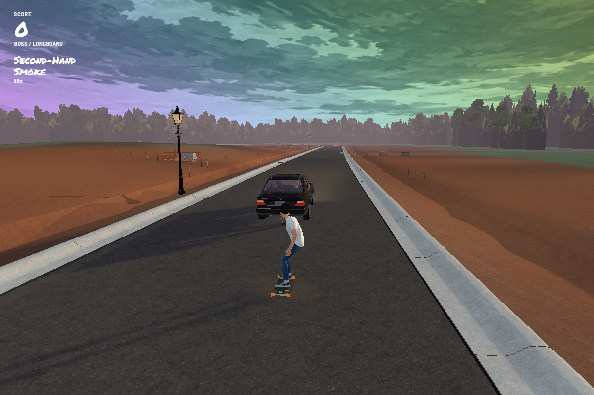
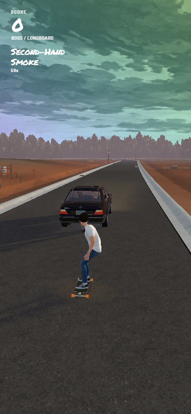

Build 168 · Keep the hits
Play Build 168 →
Boss collects 30 smoke puffs to earn his rainbow minute. Another run keeps earned hits; Back to the car clears them. During the effect he stays on the rope with normal gravity and cannot wipe out for 60 seconds.

